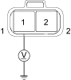

DTC P1403: EGR Valve Control Circuit Open
- Check the ''On Board Diagnostic (OBD) System Check''.
Was the OBD System Check performed?
YES – Go to step 2.
NO – Go to OBD System Check. 
- Check the DTC.
Are there DTCs P0562 or P1112 being output?
YES – Go to relevant DTC chart.
NO – Go to step 3.
- Check for the following conditions:
- Damaged EGR valve or EVRV
- EVRV wire harness and connector.
Is a problem found?
YES – Repair as necessary.
NO – Go to step 4.
- Disconnect the EVRV connector.
- Turn the ignition switch ON (II).
- Measure voltage between the EVRV 2P connector terminals No. 1 and body ground.

Wire side of female terminals
Is there B+?
YES – Go to step 7.
NO – Repair open in the wire between EVRV and the main relay.
- Turn the ignition switch OFF.
- Disconnect the ECM A connector.
- Check the circuit between EVRV connector No. 2 terminal and ECM A connector terminal No. 16 for open.

Is a problem found?
YES – Repair open in the wire between EVRV and the ECM.
NO – Go to step 10.
- Measure resistance between the EVRV 2P connector terminals No. 1 and No. 2.

Is there 14.7 – 16.1 ohms (20°C (68°F)) (At room temperature)?
YES – Substitute a known-good ECM and recheck. If symptom/indication goes away, replace the original ECM.
NO – Replace the EVRV.
| NOTICE |
The battery power supply short circuit to 5 V power supply damages the ECM.